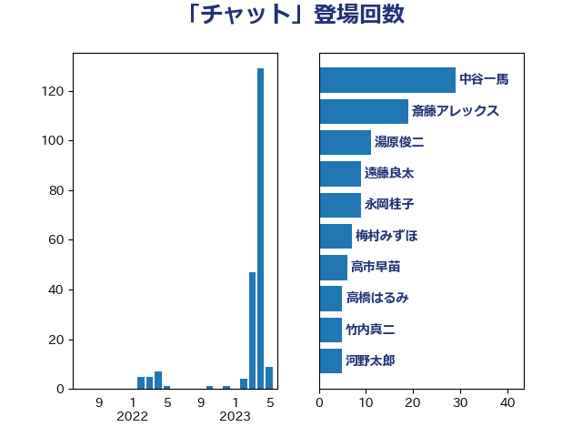

単語「チャット」

| 中谷一馬 | 立憲民主党 | 29 回 |
| 斎藤アレックス | 国民民主党 | 19 回 |
| 湯原俊二 | 立憲民主党 | 11 回 |
| 遠藤良太 | 日本維新の会 | 9 回 |
| 永岡桂子 | 自由民主党 | 9 回 |
| 梅村みずほ | 日本維新の会 | 7 回 |
| 高市早苗 | 自由民主党 | 6 回 |
| 高橋はるみ | 自由民主党 | 5 回 |
| 竹内真二 | 公明党 | 5 回 |
| 河野太郎 | 自由民主党 | 5 回 |
| 山田太郎 | 自由民主党 | 5 回 |
| 青山大人 | 立憲民主党 | 4 回 |
| 玉木雄一郎 | 国民民主党 | 4 回 |
| 平将明 | 自由民主党 | 4 回 |
| 伊藤孝恵 | 国民民主党 | 4 回 |
| 鈴木貴子 | 自由民主党 | 3 回 |
| 片山大介 | 日本維新の会 | 3 回 |
| 梅谷守 | 立憲民主党 | 3 回 |
| 塩崎彰久 | 自由民主党 | 3 回 |
| 西村康稔 | 自由民主党 | 2 回 |
| 牧島かれん | 自由民主党 | 2 回 |
| 松野博一 | 自由民主党 | 2 回 |
| 松本剛明 | 自由民主党 | 2 回 |
| 岸田文雄 | 自由民主党 | 2 回 |
| 堀場幸子 | 日本維新の会 | 2 回 |
| 吉田はるみ | 立憲民主党 | 2 回 |
| 井坂信彦 | 立憲民主党 | 2 回 |
| 串田誠一 | 日本維新の会 | 2 回 |
| 中川康洋 | 公明党 | 2 回 |
| 輿水恵一 | 公明党 | 1 回 |
| 西岡秀子 | 国民民主党 | 1 回 |
| 米山隆一 | 立憲民主党 | 1 回 |
| 渡辺周 | 立憲民主党 | 1 回 |
| 浜田靖一 | 自由民主党 | 1 回 |
| 沢田良 | 日本維新の会 | 1 回 |
| 林芳正 | 自由民主党 | 1 回 |
| 松野明美 | 日本維新の会 | 1 回 |
| 杉尾秀哉 | 立憲民主党 | 1 回 |
| 平林晃 | 公明党 | 1 回 |
| 川合孝典 | 国民民主党 | 1 回 |
| 岬麻紀 | 日本維新の会 | 1 回 |
| 山岡達丸 | 立憲民主党 | 1 回 |
| 小林茂樹 | 自由民主党 | 1 回 |
| 宮崎雅夫 | 自由民主党 | 1 回 |
| 宮口治子 | 立憲民主党 | 1 回 |
| 大野敬太郎 | 自由民主党 | 1 回 |
| 大島敦 | 立憲民主党 | 1 回 |
| 塩村あやか | 立憲民主党 | 1 回 |
| 北神圭朗 | 無所属 | 1 回 |
| 勝部賢志 | 立憲民主党 | 1 回 |
| 中条きよし | 日本維新の会 | 1 回 |